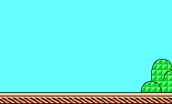
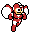
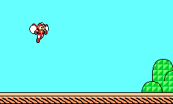
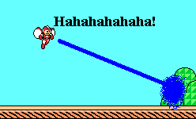

Making your Frames
Placing your Characters:
Find the folder you saved your pictures to it either in My Computer or Windows Explorer. Don't open any pictures yet. Now open MS Paint. First of all, locate two boxes with shapes in them over at the left of the screen. Make sure the bottom one is selected. If not, simply click the bottom one. Pull up whichever program you had the Picture folder in and open up a background. Copy it by right-clicking on the mouse and selecting 'Copy' on the Menu that appears. Pull up MS Paint and Press Ctrl+V to paste the background. Pull up the Folder again and open a character. Copy and paste the same was but this time, chose somewhere in the background to put the character. If you're using a colored background like this:

And you're character has and white in it like this:

Then the white areas of the character will become whatever color the background is behind it. The solution is easy. Color the work area around the background a color that isn't used in either the background or the character such as yellow and paste the character on it. Remove the unwanted Yellow by Right clicking on the Yellow area. Highlight the character and move it onto the background. Make sure you still have Yellow as your active color and select the Eraser tool. Right click and move the cursor over the character the erase the yellow. It won't affect any other color! Should you accidently left click while doing this, go under Edit and click 'Undo' to undo the erasing. Repeat this step as many times as you like with how ever many characters you want. Don't add too many because it'll clog the frame and you can't add much else. So far, the picture I'm working on looks like this:

Adding Dialouge:
Click the button on the Tool bar of MS Paint that looks like the letter A. Make a box near your character however big you want but not too big. Choose whatever font and size you want. I am using Times Roman New with 14 point font. After that, type in whatever you want your character to say. Put in whatever you want, but on my picture I'm going to make Mega laugh. Here's what my picture looks like now:

Other Effects:
Use various tools on the tool bar to create attacks, props, or anything else that might come to mind. I'm using the Line function along with the Airbrush tool to have Mega shoot the plant in the picture with a beam that explodes on impact:

When you feel you've completed the frame, save it the same way you saved all you individual pictures. Repeat each of the three sub-steps to create several frames for your comic. If you want to keep these to yourself, make a folder for each comic, name then whatever you want and save them. If you plan to put these out on the internet, name them something like 'CX_YY' replacing X with the comic number and the X's with the frame number. Don't put a "-" because people using Netscape and such will not be able to view it (I learned this the hard way...)
As I've said before, I'm only going over the basics. It's up to you to learn the more complex stuff that can make your comics top-notch!